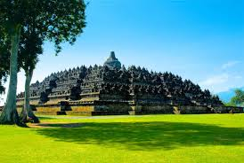

Selamat Datang di Wisata Indonesia
Temukan Keindahan Alam & Budaya Nusantara
Home
Objek Wisata
Galeri
Kontak
Objek Wisata Populer di Indonesia
Indonesia adalah negara kepulauan dengan ribuan destinasi wisata yang memukau. Berikut beberapa tempat wisata paling terkenal yang menjadi kebanggaan Indonesia:
| Gambar | Nama Tempat | Lokasi | Deskripsi |
|---|---|---|---|
|  | Candi Borobudur | Magelang, Jawa Tengah | Candi Buddha terbesar di dunia dan salah satu keajaiban dunia. Terletak di Magelang dan dikelilingi oleh relief indah serta pemandangan alam yang menakjubkan. |
.jpg)
|
Pura Uluwatu | Bali | Pura yang berada di atas tebing menghadap Samudra Hindia ini menyuguhkan pemandangan sunset indah dan pertunjukan tari Kecak yang memukau. |
.jpg)
|
Gunung Bromo | Jawa Timur | Salah satu gunung berapi aktif paling terkenal di Indonesia, terkenal dengan pemandangan sunrise spektakuler di lautan pasir. |
.jpg)
|
Danau Toba | Sumatera Utara | Danau vulkanik terbesar di dunia dengan Pulau Samosir di tengahnya, dikelilingi keindahan alam dan budaya Batak yang khas. |
.jpg)
|
Raja Ampat | Papua Barat | Destinasi wisata bahari kelas dunia dengan keanekaragaman hayati laut luar biasa dan panorama pulau-pulau kecil yang eksotis. |
| Informasi Kontak | |
|---|---|
| Website Resmi: | www.indonesia.travel |
| Email: | msbhuddn26gnr@gmail.com |
| Telepon: | +62 877-7247-0069 |
Hubungi Kami: msbhuddn26gnr@gmail.com | 📞 +62 877-7247-0069
© 2025 Wisata Indonesia. Semua Hak Dilindungi.